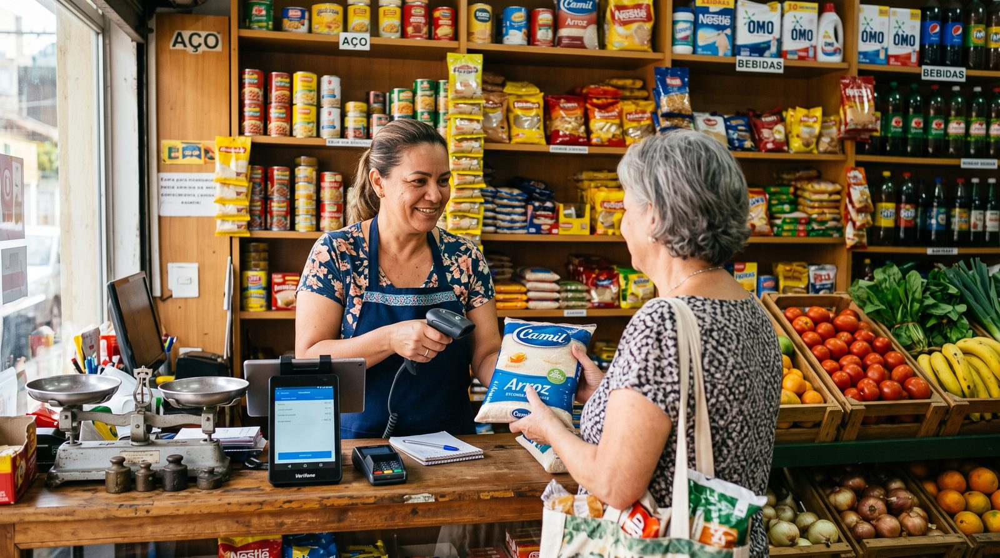

Logiciel de caisse primeur : bien choisir sa caisse fruits et légumes en 2026
Vendre des fruits et légumes, ce n'est pas vendre des paquets. Vous pesez, vous ajustez vos prix au cours du marché, vous jetez ce qui ne part pas, vous faites les marchés tôt le matin et vous tenez parfois l'ardoise d'un habitué. Un logiciel de caisse pour primeur doit épouser ce métier : la vente au poids, la démarque, le réassort quotidien et le mode hors ligne. Voici comment choisir la bonne caisse enregistreuse pour votre commerce de fruits et légumes.

Pourquoi une caisse primeur n'est pas une caisse comme les autres
Un primeur a des contraintes que la plupart des logiciels de caisse généralistes ignorent. Le produit se vend au kilo et non à la pièce, son prix bouge presque chaque semaine selon le cours du marché, et il pourrit : ce qui n'est pas vendu aujourd'hui devient une perte demain. À cela s'ajoutent la saisonnalité (les étals changent au fil des récoltes), le réassort quotidien chez le grossiste ou au MIN, et souvent une activité de marché où l'on encaisse sans prise réseau fiable.
Une caisse enregistreuse classique sait scanner un code-barres et imprimer un ticket. Une caisse primeur, elle, doit savoir transformer un poids en prix, suivre une démarque élevée, calculer une marge produit par produit et continuer à fonctionner sur un marché à 6 h du matin. C'est cette différence qui doit guider votre choix.
Les 8 critères d'une bonne caisse fruits et légumes
Avant de signer quoi que ce soit, passez chaque solution au crible de ces huit points. Ce sont eux qui font la différence au quotidien dans un commerce de fruits et légumes.
- Vente au poids : prix au kilo calculé automatiquement, gestion du poids variable et du vrac.
- Connexion à la balance : la balance transmet le poids directement à la caisse (à vérifier selon votre modèle).
- Prix faciles à modifier : changer un tarif en quelques secondes quand le cours bouge.
- Gestion des pertes et de la démarque : saisir les invendus, les produits abîmés et les DLC dépassées.
- Suivi des stocks et réassort : savoir ce qu'il reste et préparer la commande du lendemain.
- Marge par produit : connaître la rentabilité réelle de chaque référence.
- Mode hors ligne : encaisser sur les marchés et en tournée, même sans Internet.
- Conformité fiscale : respect de la loi anti-fraude TVA, idéalement via une certification NF525.
Aucune solution « universelle » ne brille sur tous ces points. L'enjeu, pour un primeur, est de trouver une caisse qui ne fait pas l'impasse sur le poids, les pertes et le hors ligne, les trois talons d'Achille des logiciels généralistes.
Vente au poids et balance connectée : le cœur du métier
C'est la fonction non négociable. Sur un étal de primeur, l'essentiel du chiffre se fait au poids. Le bon réflexe : une caisse qui gère nativement le prix au kilo, les quantités fractionnées (du kilo au gramme) et les produits à poids variable, sans bidouille.
Balance intégrée ou balance connectée ?
Deux approches existent. Soit la balance est intégrée au poste de caisse, soit c'est une balance connectée qui envoie le poids au logiciel via RS-232, USB, Ethernet ou Wi-Fi. Dans les deux cas, le but est le même : éviter la saisie manuelle, supprimer les erreurs et accélérer le passage en caisse aux heures de pointe.
Pertes, démarque et marges : là où se joue votre rentabilité
Chez un primeur, la démarque est élevée : une partie de la marchandise ne sera jamais vendue. Fruits trop mûrs, légumes flétris, cagettes invendues en fin de journée… Si vous ne mesurez pas ces pertes, vous pilotez à l'aveugle.
Un logiciel de caisse primeur digne de ce nom permet de saisir les pertes (casse, démarque, DLC dépassées) et de tenir un stock à jour. Vous obtenez alors deux informations précieuses :
- Votre démarque réelle, produit par produit, pour ajuster vos commandes et éviter de surcommander ce qui finit à la poubelle.
- Votre marge nette par référence, une fois les pertes déduites, bien plus parlante que la marge théorique affichée.
Couplé au suivi du réassort quotidien et à la saisonnalité, ce pilotage transforme la gestion d'un étal : vous commandez mieux, vous bradez au bon moment et vous savez enfin quels produits vous font réellement gagner de l'argent.
Marché et commerce ambulant : le mode hors ligne
Beaucoup de primeurs font les marchés ou tournent en camion. Sur un marché, le réseau mobile est souvent capricieux, parfois inexistant. Une caisse qui exige une connexion permanente devient alors un handicap : impossible d'encaisser, file qui s'allonge, clients qui partent.
La solution est un vrai mode hors ligne avec synchronisation automatique : vous encaissez normalement sans réseau, et toutes les ventes remontent dès que la connexion revient. C'est, pour un commerce ambulant de fruits et légumes, un critère au moins aussi important que la vente au poids.
Sur un marché, deux choses comptent : encaisser vite et encaisser même sans réseau. Tout le reste est secondaire le samedi matin.
Notre solution recommandée pour les primeurs
digabloPos
digabloPos coche les cases qui comptent vraiment pour un commerce de fruits et légumes. Le plan de base est gratuit à vie (sans date limite, sans carte bancaire), il gère la vente au poids, le mode hors ligne avec synchronisation idéal sur les marchés, le suivi des pertes et des stocks, et il s'enrichit de modules à la carte selon vos besoins. Côté conformité, il est certifié NF525, prêt pour la facturation électronique et il gère les ardoises / crédit client pour vos habitués et restaurateurs.
👍 Points forts
- Gratuit à vie, sans engagement
- Vente au poids / gestion balance
- Mode hors ligne + synchro (utile sur les marchés)
- Gestion des pertes et des stocks
- Modules à la carte, on ne paie que l'utile
- Certifiée NF525
- Prête pour la facturation électronique
- Gestion des ardoises / crédit client
👎 À noter
- Connexion à votre balance à confirmer selon le modèle
- Certains modules avancés sont payants
- Marque plus récente que les géants du secteur
Envie d'essayer sur votre étal ?
Le plan de base est gratuit à vie, prêt en quelques minutes, sans carte bancaire. Idéal pour tester la vente au poids et le mode hors ligne avant les marchés.
Essayer digabloPos gratuitementTableau récapitulatif : les besoins d'un primeur
| Besoin du primeur | Pourquoi c'est important | digabloPos |
|---|---|---|
| Vente au poids / prix au kilo | Le cœur du chiffre d'affaires | Oui |
| Connexion balance | Supprime la saisie et les erreurs | À vérifier selon le modèle |
| Prix modifiables rapidement | Le cours du marché bouge souvent | Oui |
| Gestion des pertes / démarque | Démarque élevée sur le frais | Oui |
| Stocks & réassort | Préparer la commande du lendemain | Oui |
| Mode hors ligne | Encaisser sur les marchés | Oui |
| Ardoises / crédit client | Habitués et restaurateurs en compte | Oui |
| Certification NF525 | Conformité anti-fraude TVA | Oui |
| Facturation électronique | Obligation à venir pour les pros | Prête |
Les fonctionnalités, la conformité et la compatibilité matérielle évoluent et varient selon les configurations. Vérifiez toujours les informations à jour sur le site officiel de l'éditeur, et testez la connexion avec votre propre balance avant de décider.
Questions fréquentes
Un logiciel de caisse pour primeur peut-il vendre au poids avec une balance ?
C'est la fonction centrale d'une caisse primeur. La vente au poids suppose que la balance communique le poids au logiciel pour calculer automatiquement le prix au kilo. La connexion balance dépend du modèle (RS-232, USB, Ethernet, Wi-Fi) : vérifiez toujours la compatibilité avec votre balance avant de choisir.
Comment gérer les pertes et la démarque sur les fruits et légumes ?
Un bon logiciel de caisse primeur permet de saisir les pertes (produits abîmés, invendus, DLC dépassées) et de suivre le stock en temps réel. Vous obtenez ainsi votre démarque réelle et votre marge nette par produit, ce qui aide à ajuster les commandes et les prix.
Puis-je utiliser ma caisse primeur sur les marchés sans Internet ?
Oui, à condition de choisir une caisse avec un vrai mode hors ligne. Vous encaissez sur le marché ou en tournée même sans réseau, et les ventes se synchronisent automatiquement au retour de la connexion.
Une caisse primeur doit-elle être certifiée NF525 en France ?
Le logiciel de caisse doit respecter la réglementation anti-fraude à la TVA (inaltérabilité, sécurisation, conservation, archivage). Une certification comme la NF525 atteste cette conformité. Vérifiez que l'éditeur fournit une attestation ou un certificat.
Comment gérer un client en compte ou une ardoise chez le primeur ?
Certaines caisses primeur intègrent la gestion des ardoises et du crédit client : vous enregistrez les achats d'un restaurateur ou d'un client régulier et vous encaissez plus tard. Cela évite le cahier papier et fiabilise le suivi des règlements.
Prêt à moderniser votre étal ?
Installez votre caisse primeur en quelques minutes, sans engagement ni carte bancaire, et testez la vente au poids dès aujourd'hui.
Créer ma caisse primeur gratuite